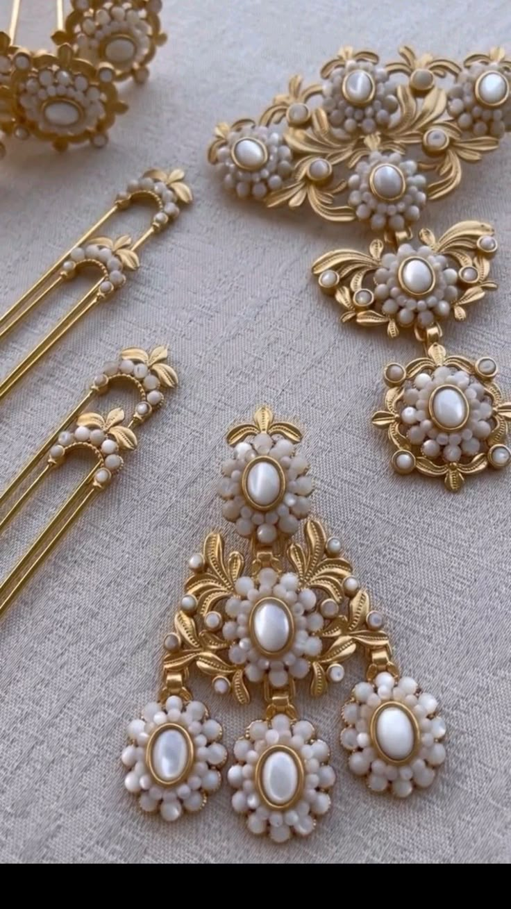
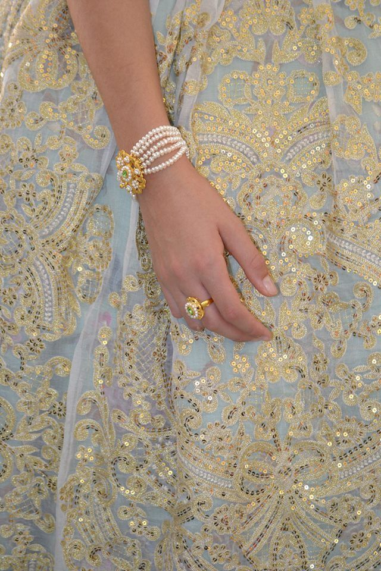

Dirección
C/ Burriana, 21
46005 Valencia
✦ Desde 1982 · Valencia
Cada año tenemos el honor de vestir a las Falleras Mayores de Valencia y a sus Cortes de Honor. Cuarenta años cuidando cada puntada, cada bordado y cada detalle de la tradición valenciana.
✦ Cuarenta años de tradición
Lo que Paquita Martorell empezó en 1982 con una máquina de coser y un puñado de clientas del barrio, hoy lo continúan sus hijas Noelia, María y Paqui.
Trabajamos con espolines, sedas y damascos de los mejores telares valencianos. Cada traje se diseña a medida, se prueba con calma y se entrega cuando está realmente perfecto.
Vestimos a niñas que estrenan su primera falda y a Falleras Mayores que viven el año más importante de su vida. Las tratamos a todas con la misma exigencia.
Conoce el taller →
✦ Indumentaria de Honor 2026
Un puñado de los trajes que han salido este año del taller para las Falleras Mayores y la Corte de Honor de Valencia.


✦ Lo que hacemos

Trajes completos a medida en espolín, seda y rayón.

Saragüells, chalecos y blusones de raíz tradicional.

Joyería tradicional valenciana, restauración y diseño.

Más de 25 sedas y damascos catalogados en taller.

Piezas de gala bordadas a mano, una a una.

Trajes y mantillas para procesiones de toda España.

✦ El taller
En el barrio de Ruzafa, a unos pasos del Mercat, recibimos a quien quiera ver de cerca cómo nace un traje de fallera.
Aquí se diseña, se corta, se cose y se prueba. Y aquí —cuando el traje ya está listo— vivimos uno de los momentos más emocionantes del oficio: ver a la fallera mirándose por primera vez en el espejo.
“Cuando una fallera entra en el taller, sabe que va a salir con algo que solo es suyo.”
— Paquita Martorell, fundadora
✦ Ven a vernos
Trabajamos con cita previa para dedicarte el tiempo que merece tu traje.
C/ Burriana, 21
46005 Valencia
Lunes a viernes
10:00 – 13:30 · 17:00 – 20:00
Sábados con cita previa
963 511 556
WhatsApp: 667 775 501
info@cosascucas.es
Respondemos en menos de 24 h laborables.